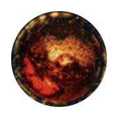
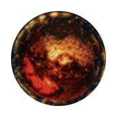
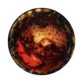

SYSTEMY PLANETARNE SEKTORA KOPRULU
//Aiur
//Aiur
Aiur
Miejsce narodzin protosów oraz dawne serce ich miedzygwiezdnego imperium. Teraz Aiur to wylęgarnia zergów pokryta niezliczonymi powojennymi szczątkami i ruinami.
//Braxis
//Braxis
Braxis
Pomimo długiej historii osadnictwa, zarówno protoskiego jak i terrańskiego lodowa planeta Braxis uznawana jest za jeden z najmniej gościnnych światów sektora Koprulu.
//Kaldir
//Kaldir
Kaldir
Skuty lodem Kaldir, położony na uboczu sektora Koprulu, od dawna opierał się kolonizacji. Żyją na nim jednak wyjątkowe i zadziwiająco odporne formy życia.
//Korhal
//Korhal
Korhal
Świat imperialny Dominium terran - Korhal IV - to skażone promieniowaniem świadectwo przepełnionej nieustanną wojną historii ludzkości w sektorze Koprulu.
//Moria
//Moria
Moria
Duża, czerwona planeta Moria, uznawana za najbardziej dochodowy świat górniczy w sektorze Koprulu znajduje się pod kontrolą skorumpowanego Kombinatu Kel-Morian.
//Nowe Folsom
 

//Nowe Folsom

Nowe Folsom
Nowe Folsom to śmiertelna, niestabilna i dostępna tylko dla najciężej izbrojonych okrętów wojennych koszmarna planeta więzienna terrańskiego Dominium.
//Char

//Char
Char
Char to główna baza wypadowa Roju w sektorze Koprulu, a brutalny świat wulkaniczny zapełniony wysoce rozwiniętymi koloniami ulowymi i rojący się milionami zergów.
//Faeoton
//Faeoton
Faeoton
Na krajobraz Faetonu składają się rozległe połacie piasku, dzięki czemu ta pustynna planeta jest idealną kryjówka dla wygnańców... lub wijących się organizów dopiero co narodzonego ula zergów.
//Mar Sara
//Mar Sara
Mar Sara
Zalana przez zergi a następnie spalona przez protosów mało znacząca planeta Mar Sara została poddana terraformacji i ponownie skolonizowana przez nieugiętych terran w roku 2502.
//Shiloh
//Shiloh
Shiloh
Obrzeżny świat Shiloh o umiarkowanym klimacie, miejsce narodzin Jima Raynora, znany jest z wytrwałości zamieszkujących go wiejskich społczeności rolniczych.
//Tarsonis
//Tarsonis
Tarsonis
Tarsonis była niegdyś centralnym ośrodkiem konfederacyjnej gospodarki i władzy. Teraz jest to zrujnowany świat poddany ścisłej kwarantannie terrańskiego Dominium.
//Umoja
//Umoja
Umoja
Umoja, jeden ze światów pierwotnie skolonizowanych przez terran, jest siedzibą Protektoratu Umojan, politycznie odrębnej frakcji, która ideologicznie stoi w opozycji do tyranicznego Dominium.
//XT39323
//XT39323
XT39323
Chociaż odległa planetoida XT39323 znajduje się w samym środku przestrzeni kontrolowanej przez Protektorat Umojański, to znajdujące się na nim gigantyczne laboratorium ksenobiologiczne jest praktycznie nieznane jego obywatelom.